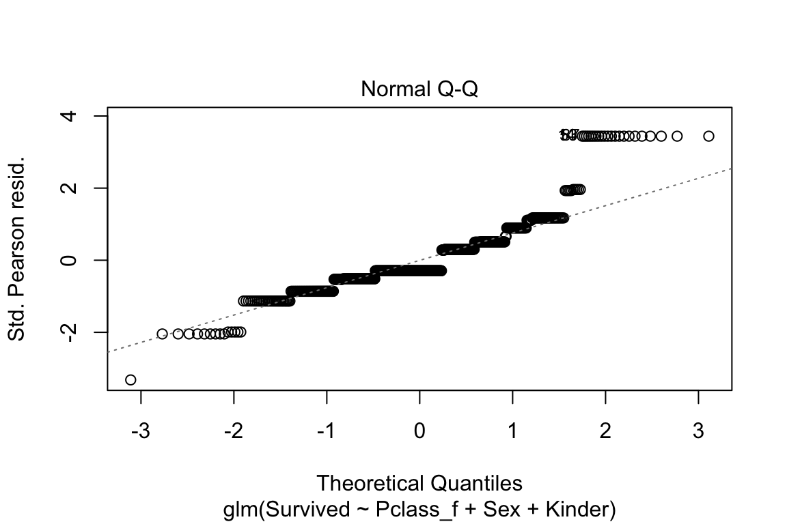
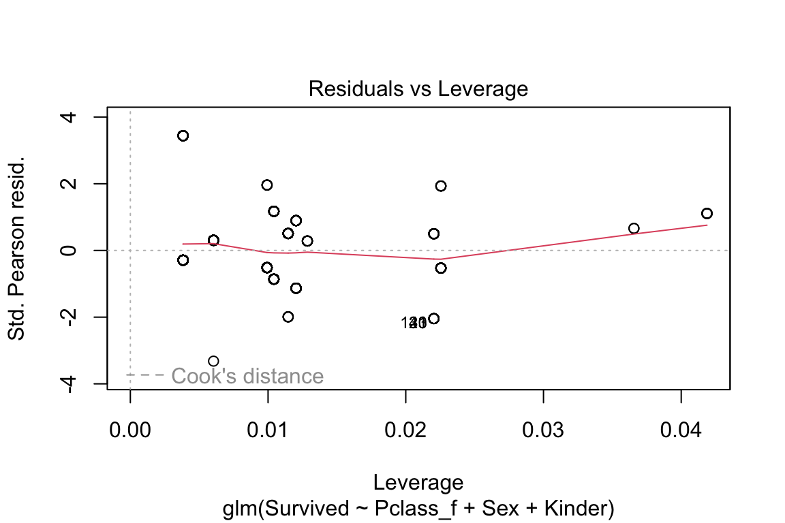

## PassengerId Survived Pclass Name Sex
## Min. : 1.0 Min. :0.0000 Min. :1.000 Length:891 Length:891
## 1st Qu.:223.5 1st Qu.:0.0000 1st Qu.:2.000 Class :character Class :character
## Median :446.0 Median :0.0000 Median :3.000 Mode :character Mode :character
## Mean :446.0 Mean :0.3838 Mean :2.309
## 3rd Qu.:668.5 3rd Qu.:1.0000 3rd Qu.:3.000
## Max. :891.0 Max. :1.0000 Max. :3.000
##
## Age SibSp Parch Ticket Fare
## Min. : 0.42 Min. :0.000 Min. :0.0000 Length:891 Min. : 0.00
## 1st Qu.:20.12 1st Qu.:0.000 1st Qu.:0.0000 Class :character 1st Qu.: 7.91
## Median :28.00 Median :0.000 Median :0.0000 Mode :character Median : 14.45
## Mean :29.70 Mean :0.523 Mean :0.3816 Mean : 32.20
## 3rd Qu.:38.00 3rd Qu.:1.000 3rd Qu.:0.0000 3rd Qu.: 31.00
## Max. :80.00 Max. :8.000 Max. :6.0000 Max. :512.33
## NA's :177
## Cabin Embarked Kinder Age_z Pclass_f Cabin_D
## Length:891 S :644 Mode :logical Min. :-29.279 3:491 Min. :0.000
## Class :character C :168 FALSE:643 1st Qu.: -9.574 2:184 1st Qu.:0.000
## Mode :character Q : 77 TRUE :71 Median : -1.699 1:216 Median :0.000
## NA's: 2 NA's :177 Mean : 0.000 Mean :0.229
## 3rd Qu.: 8.301 3rd Qu.:0.000
## Max. : 50.301 Max. :1.000
## NA's :1776 Machine Learning
In diesem Kapitel beschäftigen wir uns mit Daten des Untergangs der Titanic.
6.1 Daten einlesen
Hier können Sie den Datensatz und die Beschreibung der Daten finden. Suchen und speichern Sie den Datensatz «train.csv».
Downlaod der Daten: https://www.kaggle.com/competitions/titanic/data
Die PassengerId ist einefach eine Identifikationsnummer. Es gibt dann eine Variable, die «Survived» heisst, die ein Minimum von 0 hat und ein Maximum von 1. Das deutet sehr auf eine Dummy hin. Da der Durchschnitt («Mean») = 0.38 ist, wissen wir jetzt schon, dass 38 Prozent der Passagiere überlebt haben (der Mittelwert einer Dummy ist immer der Prozentsatz der 1er-Gruppe). Dann kommt noch der Name als Zeichenvariable, das Alter, das von 0.42 bis 80 geht. Von 177 Personen fehlen die Altersangaben. Bei den übrigen Variablen muss man nochmal nachschauen auf «kaggle». Dort steht:
| Variable | Definition | Key |
|---|---|---|
| survival | Survival | 0 = No, 1 = Yes |
| pclass | Ticket class | 1 = 1st, 2 = 2nd, 3 = 3rd |
| sex | Sex | |
| Age | Age in years | |
| sibsp | # of siblings / spouses aboard the Titanic | |
| parch | # of parents / children aboard the Titanic | |
| ticket | Ticket number | |
| fare | Passenger fare | |
| cabin | Cabin number | |
| embarked | Port of Embarkation | C = Cherbourg, Q = Queenstown, S = Southampton |
6.2 Daten in Trainings- und Testdaten aufteilen
Wenn von Machine Learning (ML) die Rede ist, dann wird (wenn es um supervised learning geht) zunächst ein Modell an Trainingsdaten trainiert bzw. angelernt und später an Testdaten getestet. Darum nehmen wir den vorliegenden Datensatz mal auseinander und teilen die Fälle (Passagiere) zufällig den Trainingsdaten zu und später zu verwendenden Testdaten. In der Regel wird der Trainingsdatensatz grösser gewählt: Ich habe ihn auf 75% des Ursprungsdatensatzes festgelegt. Der Rest (#anti_join) wird für später als Testdatensatz aufbewahrt.
Sehen kann man nach diesem r-Chunk übrigens nichts, weil nur Datensätze im Hintergrund aufgeteilt wurden. Also suchen wir mal nach guten Datenvisualisierungen.
6.2.1 Datenvisualisierung
Eine einfache Darstellungsmöglichkeit ist ein sogenannter «Scatterplot» der die Lage von Fällen in ein Koordinatensystem einteilt, das durch zwei Variablen gebildet wird. Im Beispiel (Abbildung @ref(titanic-Datenvisualisierungen)) ist es das Alter der Passagiere «Age» und der Fahrpreis «Fare». Als Zweites haben wir ein Balkendiagramm für die Passagierklassen. Im letzten sehr aufwendigen Plotgrafik werden die Zweierbeziehungen aller Variablen dargestellt, also wie sie miteinander korrelieren (obere Nebendiagonalen), wie ihre Verteilung ist (auf der Diagonale mit Namen) und wie ihre gemeinsame Streuung ist, also ein Scatterplot in der unteren Nebendiagonalen. Mehr zu diesen SPLOM finden Sie hier: https://cran.r-project.org/web/packages/psych/vignettes/intro.pdf.
## Warning: Removed 177 rows containing missing values (`geom_point()`).
## Warning in cor(x, y, use = "pairwise", method = method): the standard deviation is zero
## Warning in cor(x, y, use = "pairwise", method = method): the standard deviation is zero
6.3 Modellbildung für den Fahrpreis
Jetzt kommt das erste Modell. Wenn Sie mit diesem Syntax experimentieren, dann kopieren Sie sich mal die Zeile für das Modell, löschen aus von «Age_z» … bis «Kinder» heraus und schätzen Sie mal das mit den summarys. Schauen Sie sich die gut an und achten Sie darauf, was passiert, wenn Sie die Summanden für I(Age_z^2) usw. wieder in das Modell tun. Am Ende können Sie versuchen das Modell durch weitere Variablen ergänzen und verbessern oder andere Teile wieder herausnehmen. 1.
In der Summary des fits_titanic sehen wir zunächst ganz oben die Formel. Da der Preis schnell hoch ging, wird für den Preis mit «log» der natürliche Logarithmus gebildet (Es wird Fare + 1 gerechnet, weil der log für 0 nicht definiert ist und für einige Passagiere angegeben ist, dass ihr Fahrpreis 0 war.) Das Geschlecht ist eine Dummyvariable mit 1 für männlich. Das Alter ist eine zentrierte Variante der Variable Age. Die Zentrierung machen wir, weil die resultierende zentrierte Variable nicht mehr sehr stark mit ihrer quadrierten Version. Den Befehl für die Zentrierung finden Sie in der «Datenaufbereitung.Rmd». Dann folgt der etwas komische Ausdruck für die quadrierte Version der Altersvariable «I(Age_z^2)». Die Quadrierung machen wir, weil die Beziehung zwischen Alter und Fahrpreis vermutlich nicht linear ist, sondern kurvilinear quadratisch (Alter hat oft einen quadratischen Einfluss, weil in der Regel Ältere und Jüngere etwas weniger Geld haben als die mittlere Altersgruppe). Wenn nur das Alter als quadratische Funktion in der Gleichung wäre, dann müsste die quadratische Funktion einer um 0 zentrierten Variable immer wie eine summetrische Schüssel aussehen, die um 0 liegt. In der Regel ist die Schüssel aber gekippt. Dafür wird noch gebraucht, dass die Altersvariable «Age_z» auch noch in ihrer nichttransformierten Form Teil der Gleichung ist.
Wir lesen nun in der Tabelle die b, die in der Spalte «Estimate» stehen. Der Intercept hat ein \(b_1\) von 2.66 und keiner weiss, wie man das interpretieren soll. Ist aber auch nicht wichtig. Dann kommt schon die Variable «Sex» für das Geschlecht mit 1 für «männlich». Wir können hier sehen, dass männliche Mitreisende einen tieferen Fahrpreis gezahlt haben und zwar das auch signifikant, da der Pr(>|t|) bzw. einfach der p-Wert kleiner ist als .05 (Die «wissenschaftliche» Schreibweise ist etwas mühsam zu lesen. Der p-Wert für Sexmale ist 0.00000763). Der Einfluss des linearen Alters ist klein, negativ und nicht signifikant. In der Stichprobe findet es sich also, dass die Regressionsgerade für das Alter leicht nach unten schräg ist. Die «Schüssel», die vom nachfolgenden quadrierten Alter gebildet wird, neigt also leicht nach rechts. Da das quadrierte Alter auch negativ ist, sieht es aus als wäre die Beziehung zwischen Alter und Fahrpreis ein umgekehrter Bogen einer quadratischen Funktion, die sehr flach ist und rechts ein bischen stärker nach unten gebogen als links. Allerdings ist auch der Einfluss des quadrierten Alters nicht signifikant. Probieren Sie es mal ohne das quadrierte Alter, was dann passiert.
Dann folgt die Variable «Survived», die anscheinend angibt, dass Passagiere, die überlebt haben, etwas weniger zahlen mussten. Das ist intuitiv und theoretisch natürlich Quatsch, da hier die Kausalität zeitlich auf den Kopf gestellt wird. Die Varialbe müsste aus einem seriösen Modell wieder raus. Gut also, dass Sie das hier gelesen haben.
Dann kommen noch zwei Varialben für die Passagierklasse «Pclass». Hier hat R automatisch die Variable Pclass, die drei Ausprägungengen hatte in drei Dummys aufgeteilt, wobei die Ausprägung die im Level des Faktors an erster Stelle steht, als Referenzkategorie genommen wird, was im Titanicmodell die Klasse 3 ist. Wäre die auch im Modell, hätten wir perfekte Multikollinearität, weil wir immer schon wüssten, in welcher Klasse jemand eingecheckt sein musste, wenn es nicht die «first class» oder «second class» war. Wir sehen nun, dass die Passagiere der zweiten Klasse mit einem b von 0.49 einen signifikant höheren Preis bezahlt haben als die Personen der 3. Klasse. Der Unterschied ist vergleichsweise stark, was man daran erkennen kann, dass der t-Wert vergleichsweise hoch ist bei 6.859. Allerdings ist der t-Wert für den Unterschied zwischen 3. Klasse und 1. Klasse noch viel grösser. Für die «first class» musste also noch deutlich mehr gezahlt werden. Interessanterweise haben auch Kinder etwas mehr bezahlt als Erwachsene, obwohl die Zugehörigkeit der Klasse schon rausgerechnet ist. Offenbar waren Kinder auf dem Schiff eher besser untergebracht als der Schnitt oder wie würden Sie sich das erklären?
Der Summary-Befehl gibt keinen sehr guten Output raus und lässt sich auch nicht gut anpassen. Für einen Abdruck in einem Forschungsbericht eignet sich das noch weniger. Daher versuchen wir hier eine schönere Ausgaben hinzubekommen
6.3.1 Regressionsoutput
Mit der Funktion von sjPlot::tab_model können wir die standardisierten Regressionkoeffizienten rausgeben lassen (und sie auch als std. b bezeichnen). Zudem werden uns ein Konfidenzintervall «CI» für die b rausgegeben und eine «standardized CI» für die standardisierten Regressionskoeffizienten. Speziell ist, dass einfach p rausgegeben werden und standardisierte p. R gibt dazu als Hinweis, dass die p-Werte hier unteschiedlich sein können, weil in der Formel logarithmen und quadrierte Beziehungen drin sind. Im Zweifel interpretieren Sie besser die einfachen p und nicht die standardisierten «std. p».
## Formula contains log- or sqrt-terms.
## See help("standardize") for how such terms are standardized.| log(Fare+1) | ||||||
|---|---|---|---|---|---|---|
| Predictors | b | std. b | CI | standardized CI | p | std. p |
| (Intercept) | 2.66 | 0.83 | 2.51 – 2.81 | 0.80 – 0.87 | <0.001 | <0.001 |
| Sex [male] | -0.32 | -0.06 | -0.45 – -0.18 | -0.10 – -0.02 | <0.001 | 0.003 |
| Age z | -0.00 | -0.02 | -0.01 – 0.00 | -0.05 – 0.00 | 0.314 | 0.063 |
| Age z^2 | -0.00 | -0.00 | -0.00 – 0.00 | -0.02 – 0.01 | 0.685 | 0.639 |
| Survived | -0.08 | -0.00 | -0.22 – 0.07 | -0.02 – 0.02 | 0.294 | 0.914 |
| Pclass f [2] | 0.49 | 0.06 | 0.35 – 0.63 | 0.02 – 0.10 | <0.001 | 0.004 |
| Pclass f [1] | 1.78 | 0.44 | 1.63 – 1.93 | 0.39 – 0.48 | <0.001 | <0.001 |
| KinderTRUE | 0.61 | 0.05 | 0.27 – 0.95 | -0.04 – 0.15 | <0.001 | 0.272 |
| Observations | 536 | |||||
| R2 / R2 adjusted | 0.578 / 0.572 | |||||
Als auch nicht ganz schlechte Alternative kann gtsummary::tbl_regression benutzt werden, was durch weitere gepipte Befehle angepasst und ergänzt werden kann. Hier sind die b zu sehen und deren CI, sowie die p-Werte und gleich noch zwei Varianzinflationswerte. Wenn Sie schauen wollen, ob es ein Problem gibt, helfen die «Adjusted GVIF» schon, weil sie für grössere Stichproben kleiner sind als die VIF und damit die Probleme durch Multikollinearität angemessener abbilden [@Fox1992]. Ein Adjusted GVIF wird unangenehm, wenn es über 2 ist, also der VIF etwa bei 4. Schön an der Tabelle @ref(tab:gtsummary-tabelle) ist auch, dass immer auch die Referenzkategorie mit ausgewiesen wird, auch wenn sie immer die Ausstriche für die Tabellen aufweisen, wie zB bei Sex:female. Unter der Tabelle stehen noch einige Gütemasse für das Modell, wie \(R^2\) (.578) und die zugehörige F-Statistik als p-Wert (schön als <0.001, wobei ich die führende 0 weglassen würde, wenn die Werte praktisch immer etwas mit nach dem Komma sind).
Recht blöd finde ich an gtsummary, dass die unstandardisierten Regressionskoeffizienten als «beta» bezeichnet werden und die standardisierten Regressionskoeffizienten (die hin und wieder auch als «BETA» bezeichnet werden) garnicht in die Ausgabe gepackt werden können.
| Characteristic | b | 95% CI1 | p-value | GVIF1 | Adjusted GVIF2,1 |
|---|---|---|---|---|---|
| Sex | 1.5 | 1.2 | |||
| female | — | — | |||
| male | -0.32 | -0.45, -0.18 | <0.001 | ||
| Age_z | 0.00 | -0.01, 0.00 | 0.3 | 3.1 | 1.8 |
| I(Age_z^2) | 0.00 | 0.00, 0.00 | 0.7 | 2.5 | 1.6 |
| Survived | -0.08 | -0.22, 0.07 | 0.3 | 1.7 | 1.3 |
| Pclass_f | 1.4 | 1.1 | |||
| 3 | — | — | |||
| 2 | 0.49 | 0.35, 0.63 | <0.001 | ||
| 1 | 1.8 | 1.6, 1.9 | <0.001 | ||
| Kinder | 3.5 | 1.9 | |||
| FALSE | — | — | |||
| TRUE | 0.61 | 0.27, 0.95 | <0.001 | ||
| R² = 0.578; Adjusted R² = 0.572; Sigma = 0.641; Statistic = 103; p-value = <0.001; df = 7; Log-likelihood = -518; AIC = 1,054; BIC = 1,092; Deviance = 217; Residual df = 528; No. Obs. = 536 | |||||
| 1 CI = Confidence Interval, GVIF = Generalized Variance Inflation Factor | |||||
| 2 GVIF^[1/(2*df)] | |||||
Bevor wir unsere Therie anhand unserer Ergebnisse auf den Prüfstand stellen können, müssen wir die Voraussetzungen für die Regressionsmodelle überprüfen.
6.3.2 Voraussetzungschecks
Die möglichen Verletzungen der Voraussetzungen sind:
- Multikollinearität
- Deutliche Abweichung von der Normalverteilung in den Fehlern
- Heteroskedastizität
6.3.2.1 Multikollinearität
Die Toleranzen bei Age_z und I(Age_z^2) sind nur knapp über .3 und knapp .4, also schon recht klein, auch wenn die VIF noch nicht zu sehr quietschen. Da aber beide Altersvariablen keine signifikanten Werte gezeigt haben, würde ich eine der beiden eliminieren und zwar das quadrierte Alter «I(Age_z^2)». Dann sollte sich auch der sehr kleine Toleranzwert bei «KinderTRUE» erledigt haben bzw. kleiner sein - vielleicht auch nicht. Schauen Sie sich das mal an! Wenn Age_z auch ohne die quadrierte Altersvariable nicht signifikant ist, würde ich nur «KinderTRUE» im Modell lassen. Könnte man eine Faktorenanalyse für die zwei aufgrund der Altersvariablen gebildeten Variablen machen? Neeeee! Was soll da für ein latenter Faktor rauskommen? Wieder das Alter? Das macht keinen Sinn. Die Variable «Kinder» ist ja direkt aus dem Alter bestimmt worden. Da brauchen wir nicht nach latenten Faktoren zu suchen.
## Es gibt ein Paket "olsrr" für die Prüfung der OLS-Voraussetzungen,
## wo man sich den VIF und die Toleranz rauslassen kann:s
olsrr::ols_vif_tol(fit_titanic)
## Variables Tolerance VIF
## 1 Sexmale 0.6817534 1.466806
## 2 Age_z 0.3252169 3.074871
## 3 I(Age_z^2) 0.3995618 2.502742
## 4 Survived 0.5967148 1.675842
## 5 Pclass_f2 0.8292064 1.205972
## 6 Pclass_f1 0.6550188 1.526674
## 7 KinderTRUE 0.2878347 3.4742176.3.2.2 Residualplot
# Mache mal ein Histogramm der Residuen. Die sollten annähernd normalverteilt sein.
olsrr::ols_plot_resid_hist(fit_titanic)Im Residualplot ohne den Logarithmus für die AV «Fare» war schon ganz schön schief. Hier sieht es etwas besser aus mit der Verteilung. Das ist ja schon fast normalverteilt, auch wenn die mittlere Kategorie wie ein Stinkefinger in der Landschaft steht. Schauen wir mal den N-Q-Q-Plot an, wie der aussieht …
6.3.2.3 N-Q-Q
# Führe einen Normal-Q-Q-Plot aus
olsrr::ols_plot_resid_qq(fit_titanic)OK, es gibt rechts eine paar Werte über der Referenzlinie, die für die Normalverteilung steht und links ein paar unter der Referenzlinie. Das heisst, die Normalverteilung ist nicht perfekt getroffen. Wir sollten also zunächst die Resultate unseres Modells nicht überinterpretieren. Es gibt noch viele Anpassungen, mit denen man diese kleineren Verletzungen der Voraussetzungen für die Regression auflösen kann. Das geht aber für die Flughöhe dieser Veranstaltung zu hoch bzw. zu tief, wie Sie wollen.
6.3.2.4 Heteroskedastizität
# Plotte die geschätzten Werte auf der Regressionsgeraden (Y-Hut)
# auf der X-Achse und die Residuen auf der Y-Achse
olsrr::ols_plot_resid_fit(fit_titanic)Es gibt auch hier eine gewisse Heteroskedastizität, aber eigentlich sind die Werte schon relativ gleichmässig um 0 verteilt. Wir können das ja mal testen.
# Führe einen Breusch-Pagan-Test aus
olsrr::ols_test_breusch_pagan(fit_titanic)
##
## Breusch Pagan Test for Heteroskedasticity
## -----------------------------------------
## Ho: the variance is constant
## Ha: the variance is not constant
##
## Data
## -----------------------------------------
## Response : log(Fare + 1)
## Variables: fitted values of log(Fare + 1)
##
## Test Summary
## -------------------------------
## DF = 1
## Chi2 = 51.25669
## Prob > Chi2 = 8.104396e-13Oha, Breusch und Pagan finden, dass unsere Varianz der Residuen heftig heterogen ist. Der p-Wert des Chi2 ist sehr weit von 0 entfernt. Das ist allerdings schnell so, wenn die Stichprobe recht gross ist. Dann wird irgendwann jedes Chi2 signifikant. Also auch hier: Wir gehen vorsichtig mit den Ergebnissen um, interpretieren nicht exakt die Nachkommastellen von bs und sagen auch bei einem p-Wert von .03, dass die Signifikanz hier nicht ganz klar ist (vor dem Hintergrund, dass einige Voraussetzungen verletzt sind).
6.3.3 Algorithmus für den Fahrpreis
Wir haben jetzt also ein Modell und festegstellt, dass unsere Regression mit der log-Transformation für die AV und einer quadrierten UV nicht super durch die Prüfung der Voraussetzungen kommt. Also sind wir vorsichtig, lassen aber trotzdem mal einen Schätzalgorithmus für den Fahrpreis raus. Der Algorithmus ist schon da: Es ist der Fit des Modells. Dieses gefittete Modell können wir jetzt auf den Testdatensatz ansetzen und mal schauen, wie gut das Modell zu den Testdaten passt, anhand derer es nicht gebaut wurde, die aber auch die Outcomes enthalten, also den Fahrpreis.
Wir berechnen als vorhergesagte Werte die «preds» mit predict(fit_titanic, test). Dann Binden wir die an den Test-Datensatz «test», wobei wir dort auch noch schnell den natürlichen Logarithmus für «Fare» bilden, indem wir log(test$Fare) einsetzen, mit cbind (Spalten zusammenbinden) zusammenfassen und als tibble (tidydatentabelle) speichern. In der Grafik sieht man, das die Prognosen nicht perfekt sind, aber ok. Wenn Sie es mal ohne den schwieriger zu interpretierenden log machen, dann sehen Sie spätestens hier die Probleme, weil die hohen Fahrpreise schwer kalkuliert werden können.
## Warning: The `x` argument of `as_tibble.matrix()` must have unique column names if `.name_repair`
## is omitted as of tibble 2.0.0.
## ℹ Using compatibility `.name_repair`.
## Warning: Removed 45 rows containing missing values (`geom_point()`).Jetzt hätten Sie also einen Algorithmus, den Sie nicht nur auf Test-Daten anlegen könnten, sondern an jede andere Konstellation von Daten, die die UVs enthält. Sie könnten also mit neuen Daten über predict(fit_titanic, neudaten) festlegen, was jede Person im Datensatz schätzungsweise für einen Preis für die Titanicüberfahrt gezahlt hätte. Das Modell ist nicht perfekt, aber Sie könnten es mit etwas Nachsteuern fair gestalten und jedem sagen, dass das die beste Anlehnung an die damalige (sicher eher analogen) Preisgestaltung ist.
Das ist zwar nicht völlkommen überflüssig, aber wenn wir an «Titanic» denken, denken wir an Leonardo DiCaprio und an das Überleben und Sterben vor dem Fernseher und natürlich damals auf der Titanic. Damit haben wir nicht gleich angefangen, weil das «Überleben» eine dichotome Variable ist und damit eine Dummy als AV. Das macht das Ganze schon etwas komplizierter, aber klar, schauen wir uns das an.
6.4 Überlebensprognose
Wenn man an die Titanic denkt, grübelt man in der Regel nicht lange, wie wohl die Preise auf der Titanic waren. Viel mehr ist «Titanic» mit dem Schiffsunglück verbunden (ok und mehr oder weniger guten Verfilmungen). Wenn wir von dem Unglück etwas lernen wollen («Learning from Desaster»), dann ist es sinnvoll, Prognosemodelle für die Überlebenswahrscheinlichkeit zu machen. Die Überlebenschancen für verschiedene Personengruppen auf der Titanic ergeben sich daraus, wie viele Personen der Gruppen überlebt haben. Ein Erklärungsmodell hat also zur abhängigen Variable (AV), ob eine Person überlebt hat (1) oder nicht (0). Die AV ist also eine Dummyvariable. Wenn die AV eine Dummyvariable ist, dann verweigert es R nicht, eine lineare Regression zu rechnen (das macht es ein bischen «gefährlich», weil viele Kolleg:innen und Reviewer:innen normale lineare Regressionen bei Dummys in der AV als grossen Spezifikations-Fehler betrachten).
##
## Call:
## lm(formula = Survived ~ Pclass_f + Sex + Age_z + I(Age_z^2) +
## Kinder, data = train)
##
## Residuals:
## Min 1Q Median 3Q Max
## -0.96849 -0.25350 -0.06132 0.22493 0.97743
##
## Coefficients:
## Estimate Std. Error t value Pr(>|t|)
## (Intercept) 0.57899126 0.03753055 15.427 < 2e-16 ***
## Pclass_f2 0.17998008 0.04200296 4.285 0.0000217 ***
## Pclass_f1 0.37609658 0.04287552 8.772 < 2e-16 ***
## Sexmale -0.50783615 0.03528671 -14.392 < 2e-16 ***
## Age_z -0.00292748 0.00200019 -1.464 0.144
## I(Age_z^2) -0.00001618 0.00008790 -0.184 0.854
## KinderTRUE 0.12521089 0.10287435 1.217 0.224
## ---
## Signif. codes: 0 '***' 0.001 '**' 0.01 '*' 0.05 '.' 0.1 ' ' 1
##
## Residual standard error: 0.382 on 529 degrees of freedom
## (132 observations deleted due to missingness)
## Multiple R-squared: 0.4033, Adjusted R-squared: 0.3965
## F-statistic: 59.59 on 6 and 529 DF, p-value: < 2.2e-16Die Werte sind jedenfalls nicht intuitiv interpretierbar, weil die AV nur 0 und 1 annehmen kann und keine Zwischenwerte. Zudem streuen die Fehler stark um die Normalverteilungskurve (N-Q-Q-Plot), sind also stark heteroskedastisch.
6.5 Logistische Regression
Da eine lineare Regression b-Werte zur Folge hätte, die für reale Werte in den UVs Werte unter 0 und über 1 für die AV vorhersagen würde, wird eine logistische Regression gerechnet. Werte unter 0 und über 1 können nicht existieren, weil die AV eben eine Dummy ist und nur die Werte 0 und 1 kennt.
Die Formel einer logistischen Regression sieht eigentlich so aus:
\[\begin{align} P(y = 1) = & \frac{1}{1+e^{-z}} \text{der Logit z ist die Regressionsgleichung}\\ Y_i=&b_1 + b_2X_{i2} + b_3X_{i3}+e_i\\ P(Y_i) = & \frac{1}{1+e^{-(b_1+b_2X_{2i})}}\\ P(Y_i) = & \frac{1}{1+e^{-(b_1+b_2X_{2i}+b_3X_{3i}+ \text{\dots} + b_nX_{ni})}} \end{align}\]Die Gerade ist keine Gerade mehr, sondern eine S-Kurve und sieht in etwa so aus:
Die berechneten b’s sind kaum inhaltlich interpretierbar. Im «summary» Output stehen in der Spalte «Estimates» die b’s. Was man sehen und sagen kann ist, dass die Mitfahrenden der 2. Klasse, im Vergleich zur 3. Klasse, eine bessere Chance hatten, zu überleben (der Estimate (b und keine OR) ist signifikant positiv). Die Mitreisenden der ersten Klasse hatten eine noch grössere Chance zu überleben (b ist positiv, grösser als bei Pclass_f2, hat auch einen grösseren z-Wert und einen kleineren p-Wert).
##
## Call:
## glm(formula = Survived ~ Pclass_f + Sex + Kinder, family = binomial,
## data = train)
##
## Deviance Residuals:
## Min 1Q Median 3Q Max
## -2.2275 -0.6829 -0.4035 0.6743 2.2578
##
## Coefficients:
## Estimate Std. Error z value Pr(>|z|)
## (Intercept) 0.2353 0.2209 1.065 0.28684
## Pclass_f2 1.1302 0.2864 3.946 7.94e-05 ***
## Pclass_f1 2.1581 0.2871 7.518 5.57e-14 ***
## Sexmale -2.7026 0.2438 -11.087 < 2e-16 ***
## KinderTRUE 1.1727 0.3732 3.142 0.00168 **
## ---
## Signif. codes: 0 '***' 0.001 '**' 0.01 '*' 0.05 '.' 0.1 ' ' 1
##
## (Dispersion parameter for binomial family taken to be 1)
##
## Null deviance: 724.29 on 535 degrees of freedom
## Residual deviance: 483.87 on 531 degrees of freedom
## (132 observations deleted due to missingness)
## AIC: 493.87
##
## Number of Fisher Scoring iterations: 5Besser als die b’s können die exponentiellen b’s EXP(B) gelesen werden. Sie geben eine «Odds Ratio» an. Das kann so gelesen werden, wie Multiplikatoren von Wahrscheinlichkeiten. Die «Odds Ratios» in Tabelle @ref(tab:Publikationsoutput1) bwz. die «OR» in Tabelle @ref(tab:Publikationsoutput2) geben diese Werte raus, die man mit (Wett)quoten übersetzen könnte. Sie fangen bei >0 an und können unendlich gross werden. Wenn eine Variable keinen Einfluss auf die Wahrscheinlichkeit des Ausgangs der AV hat, dann ist ihr b = 1. Im Beipspiel kann man ablesen, dass im Vergleich zur 3. Passagierklasse (Pclass_f ist die Referenz und darum in Tabelle @ref(tab:Publikationsoutput1) gar nicht zu sehen und in Tabelle @ref(tab:Publikationsoutput2) ausgestrichen) die 2. Passagierklasse eine 3.1-fache Überlebenschance hatte und die 1. Passagierklasse eine 8.65-fache.
| Survived | |||
|---|---|---|---|
| Predictors | Odds Ratios | CI | p |
| (Intercept) | 1.27 | 0.82 – 1.96 | 0.287 |
| Pclass f [2] | 3.10 | 1.77 – 5.47 | <0.001 |
| Pclass f [1] | 8.65 | 4.99 – 15.41 | <0.001 |
| Sex [male] | 0.07 | 0.04 – 0.11 | <0.001 |
| KinderTRUE | 3.23 | 1.56 – 6.78 | 0.002 |
| Observations | 536 | ||
| R2 Tjur | 0.404 | ||
Die Modellausgabe kann auch mit gtsummary erfolgen (und es gibt einige weitere Pakete). Bei gtsummary werden die Spalten für die Analyse durch Befehle in der Pipe ergänzt. In der folgenden Variante werden die Odds-Ratios (OR) rausgelassen und ihre Konfidenzintervalle (CI) sowie die p-Werte und den (generalisierten) Varianzinflationsfaktor. Der kommt sogar noch mit einer Anpassung, dem «Adjusted GVIF». So lange der unter 2 liegt, wird die Analyse nicht zu sehr von Multikollinearität gestört.
| Characteristic | OR1 | 95% CI1 | p-value | GVIF1 | Adjusted GVIF2,1 |
|---|---|---|---|---|---|
| Pclass_f | 1.2 | 1.0 | |||
| 3 | — | — | |||
| 2 | 3.10 | 1.77, 5.47 | <0.001 | ||
| 1 | 8.65 | 4.99, 15.4 | <0.001 | ||
| Sex | 1.1 | 1.0 | |||
| female | — | — | |||
| male | 0.07 | 0.04, 0.11 | <0.001 | ||
| Kinder | 1.1 | 1.0 | |||
| FALSE | — | — | |||
| TRUE | 3.23 | 1.56, 6.78 | 0.002 | ||
| Null deviance = 724; Null df = 535; Log-likelihood = -242; AIC = 494; BIC = 515; Deviance = 484; Residual df = 531; No. Obs. = 536 | |||||
| 1 OR = Odds Ratio, CI = Confidence Interval, GVIF = Generalized Variance Inflation Factor | |||||
| 2 GVIF^[1/(2*df)] | |||||
6.6 Voraussetzungschecks
6.6.0.1 Multikollinearität
## Es gibt ein Paket "olsrr" für die Prüfung der OLS-Voraussetzungen,
## wo man sich den VIF und die Toleranz rauslassen kann:s
lm(Survived ~ Pclass_f + Sex + Age_z + I(Age_z^2) + Kinder, family=binomial, data=train) |>
olsrr::ols_vif_tol()
## Warning: In lm.fit(x, y, offset = offset, singular.ok = singular.ok, ...) :
## extra argument 'family' will be disregarded
## Variables Tolerance VIF
## 1 Pclass_f2 0.8579868 1.165519
## 2 Pclass_f1 0.7502936 1.332811
## 3 Sexmale 0.9486830 1.054093
## 4 Age_z 0.3265338 3.062470
## 5 I(Age_z^2) 0.3995874 2.502582
## 6 KinderTRUE 0.2886407 3.4645156.6.1 Residualplot
plot(model)

6.6.1.1 Vorhersagetest
## Warning: `as.tibble()` was deprecated in tibble 2.0.0.
## ℹ Please use `as_tibble()` instead.
## ℹ The signature and semantics have changed, see `?as_tibble`.
## predicted 0 1
## actual
## 0 100 6
## 1 31 41
## # A tibble: 1 × 1
## Accuracy
## <dbl>
## 1 0.792Manche Variablen wurden erst noch erstellt (zB «Kinder» oder «Age_z»). Die entsprechende Datenaufbereitung.Rmd können Sie hier schnell ↩︎